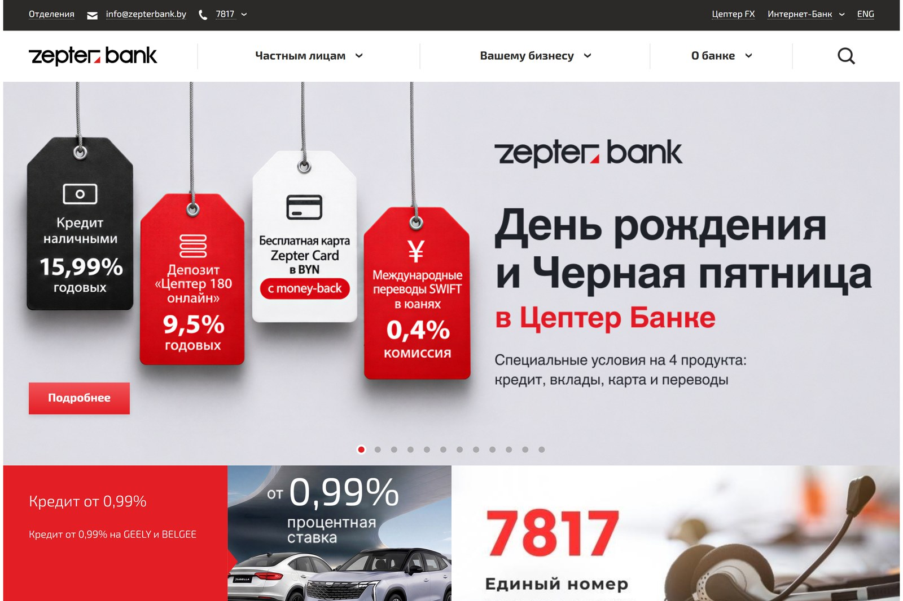
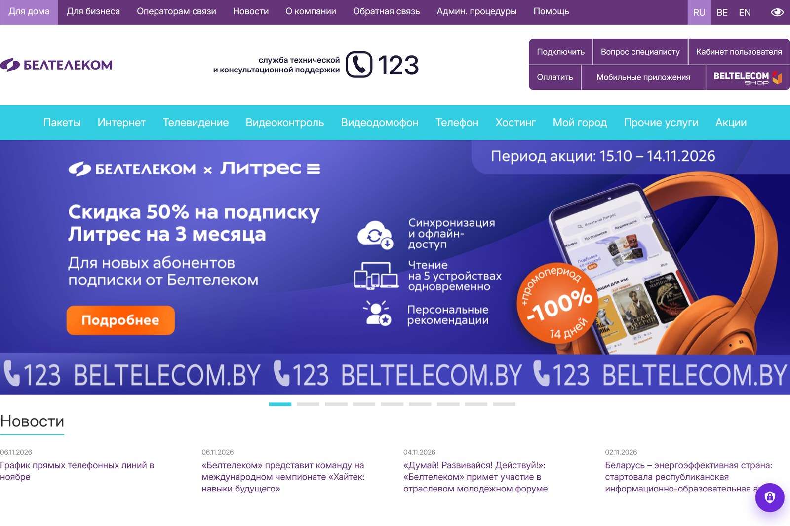

Доступы и шифрование
Проверяем доступы, включаем шифрование TLS и SRTP.
- Доступы
- TLS
- SRTP
Проверяем VoIP-инфраструктуру и закрываем слабые места: доступы, шифрование TLS и SRTP, защита от взлома, перехвата и мошеннических звонков. Настраиваем мониторинг и регламенты, чтобы телефония работала безопасно и без сюрпризов.
аудит и защита
недель проверка и настройка
мониторинг трафика


Безопасность телефонии — это не только шифрование. Проверяем доступы и конфигурацию станции, включаем TLS и SRTP, закрываем уязвимости и защищаем от взлома, перехвата и мошеннических звонков. Настраиваем мониторинг и регламенты реакции, чтобы риски были под контролем, а не выяснялись по счёту за звонки.
Станция доступна из интернета с типовыми паролями — риск взлома и захвата телефонии
Разговоры не зашифрованы: данные клиентов можно прослушать
Звонки на платные направления за счёт компании: счёт за связь растёт без причины
Записи разговоров и персональные данные хранятся без защиты
Asterisk не обновляется: открыты известные уязвимости
Инциденты замечают по счёту за связь, а не сразу
Проверяем доступы, включаем шифрование TLS и SRTP.
Закрываем слабые места и защищаем от перехвата и мошеннических звонков.
Настраиваем наблюдение и правила, чтобы телефония работала без сюрпризов.
Глубоко знаем нюансы настройки и интеграции IP-АТС.
Передовые технологии для стабильной работы и защиты данных.
Можно заключить договор на круглосуточную техподдержку.
Стоимость зависит от масштаба и задач. Точную смету фиксируем в договоре — до начала работ.
Проверка доступов, конфигурации, шифрования и журналов, отчёт с приоритетами и планом исправлений — от двух недель.
Настройка защиты и шифрования, защита от мошеннических звонков, мониторинг трафика и регламенты — смета по проекту.
Шаг 1 из 4
Теперь у нас есть верхнеуровневые требования к вашему проекту. Заполните контактные данные ниже, и наши менеджеры оперативно свяжутся, чтобы сориентировать вас по стоимости и срокам реализации проекта.
Проверяем конфигурацию станции, права доступа, сетевую периметр и журналы: ищем слабые пароли, открытые порты и устаревшие версии.
Карта рисков и уязвимостей
Оцениваем последствия найденных проблем: утечки, перехват, подмену номера и мошеннические звонки. Расставляем приоритеты исправлений.
Отчёт с приоритетами
Закрываем доступы и порты, включаем шифрование TLS и SRTP, настраиваем парольную политику и обновления.
Защищённая АТС
Настраиваем ограничения на дорогие направления, лимиты и оповещения о подозрительной активности — чтобы не платить за чужие звонки.
Контроль расходов на связь
Подключаем мониторинг трафика и событий, передаём регламенты для администраторов и остаёмся на связи по гарантии.
Постоянная защита и регламенты
Команда формируется индивидуально под каждый проект — состав и роли зависят от задач и сложности проекта
 Проектный менеджер
Координирует работу команды, контролирует сроки, коммуникацию и выполнение задач по проекту.
Проектный менеджер
Координирует работу команды, контролирует сроки, коммуникацию и выполнение задач по проекту.
 Бизнес-аналитик
Изучает задачи бизнеса, собирает требования и помогает определить структуру, функции и приоритеты проекта.
Бизнес-аналитик
Изучает задачи бизнеса, собирает требования и помогает определить структуру, функции и приоритеты проекта.
 Системный инженер
Настраивает IP-АТС, серверное окружение, маршрутизацию звонков и техническую инфраструктуру решения.
Системный инженер
Настраивает IP-АТС, серверное окружение, маршрутизацию звонков и техническую инфраструктуру решения.
 Фронтенд-разработчик
Реализует интерфейсы, адаптивность и интерактивные элементы, обеспечивая корректную работу проекта на всех устройствах.
Фронтенд-разработчик
Реализует интерфейсы, адаптивность и интерактивные элементы, обеспечивая корректную работу проекта на всех устройствах.
 Бэкенд-разработчик
Отвечает за серверную логику, интеграции, базы данных и стабильную работу функционала системы.
Бэкенд-разработчик
Отвечает за серверную логику, интеграции, базы данных и стабильную работу функционала системы.
 QA-инженер (тестировщик)
Проверяет функциональность, находит ошибки и контролирует качество проекта перед запуском.
QA-инженер (тестировщик)
Проверяет функциональность, находит ошибки и контролирует качество проекта перед запуском.
 DevOps-инженер
Настраивает окружение, мониторинг, резервное копирование и обеспечивает надёжную работу проекта.
DevOps-инженер
Настраивает окружение, мониторинг, резервное копирование и обеспечивает надёжную работу проекта.
 Аккаунт-менеджер
Сопровождает клиента после запуска, помогает с новыми задачами, приоритетами и дальнейшим развитием проекта.
Аккаунт-менеджер
Сопровождает клиента после запуска, помогает с новыми задачами, приоритетами и дальнейшим развитием проекта.
Официальные Платиновые партнёры Битрикс24 и Золотые партнёры 1С-Битрикс. Имеем сертификат Крупных корпоративных внедрений.


От лица компании ЗАО «СберЛизинг» выражаем искреннюю благодарность разработчикам компании ООО «Итач-софт» за их профессионализм и ответственность в создании нашего нового сайта, а также разработку калькулятора для расчета лизинговых платежей.
Благодаря Вашей компании ЗАО «СберЛизинг» получили качественный и функциональный сайт, который, на наш взгляд, достойно представляет нашу компанию, а также удобный инструмент для расчетов и будущих возможных интеграций в иные программные комплексы компании.

От лица нашей компании хочу сделать отзыв о совместно работе с ООО «Итач-софт».
Компания «Итач-софт» очень ответственно подходит к нашим проектам. Они сформировали команду с которой налажена очень быстрая обратная связь.
Все процессы максимально понятны и прозрачны. Мы добавлены на рабочий портал компании, где можем коммуницировать по задачам. Решать что-то по ходу и сразу. Делать быстрые созвоны. Это позволяет избежать затягивания разработки и принятия неправильных, неэффективных решений.

ОАО «БНБ-Банк» искренне благодарит компанию ООО «Итач-софт» за качественное и своевременное обслуживание сайта нашей организации.
За время работы сотрудники компании ООО «Итач-софт» проявили себя как добросовестные, исполнительные и отзывчивые специалисты. Все возникающие вопросы решались ими профессионально и в срок.
Особенно хочется отметить ответственное и внимательное отношение к требованиям и пожеланиям со стороны нашей компании.

Настоящим письмом выражаем свою искреннюю благодарность компании «Итач-софт» за отличную работу, которую проделала Ваша компания по созданию и запуску нашего сайта, а также по разработке собственной специализированной CRM-системы.
В работе с Вами мы увидели профессионализм, знание технологий, системный подход, соблюдение сроков, способность увидеть и понять наши потребности, и предложить лучшее решение.
Надеемся на дальнейшее плодотворное сотрудничество с Вами!
Утечкой данных и записей разговоров, простоями связи и финансовыми потерями: злоумышленники могут звонить на платные направления за счёт компании. Защита снижает эти риски и контролирует расходы.
Да: применяем TLS для сигнализации и SRTP для медиатрафика. Шифрование защищает от перехвата и прослушивания разговоров.
Анализ конфигурации станции и сетевого периметра, прав доступа, парольной политики, шифрования, журналов и обновлений. На выходе — отчёт с примерами и планом исправлений по приоритетам.
При корректной настройке, шифровании, аутентификации и мониторинге — да. Ключевые условия: актуальные версии, сильные пароли и контроль доступа к станции.
Да: подключаем мониторинг событий и трафика, обновления и регламентированную поддержку — самостоятельно или в рамках технической поддержки VoIP-станций.
Опишите задачу — в течение часа ответим, как её решить, и рассчитаем предварительную стоимость.

Кейс · ЕРИП
Услугами платежной системой в ЕРИП пользуются миллионы физических и сотни тысячи юридических лиц. По всем вопросам клиенты обращаются в Контакт-центр компании за помощью. Чтобы упростить работу с запросами клиентов, фиксировать все обращения и снизить нагрузку на специалистов службы поддержки, руководство компании решило преобразовать работу Контакт-центра с помощью Битрикс24.

4
месяца — длительность проекта
4
специалиста в команде
40%
рост регистрации и обработки обращений по e-mail
165
нормо-часов в месяц высвободилось у специалистов при работе с e-mail
Интерфейс модуля распределения и обработки обращений. Для сокращения времени на адаптацию сотрудников, модуль разработали максимально похожим на тот, который специалисты использовали ранее, с привычными для них кнопками и названиями полей.

Внедрение IP-телефонии и контроль нагрузки на сотрудников. С помощью интеграции с телефонной станцией все звонки фиксируются в Битрикс24. Прослушать звонок можно легко из карточки клиента. С входящим оператору Контакт-центра “поднимается” карточка звонка. Если информация об этом клиенте уже есть в системе, она отображается на экране. Также из карточки можно получить данные о предыдущих обращениях. А значит специалист понимает, с кем он общается, какие вопросы клиент задавал ранее, и может легко сформировать отчет по всем звонкам.
Для сопровождаемых Контакт-центром систем выделили отдельные номера телефона и адреса электронной почты.
На этапе прослушивания приветствия у клиента есть возможность выбрать проект, по которому ему необходима консультация.
Так, при звонке в Контакт-центр ЕРИП, клиент может выбрать необходимую цифру исходя из тематики обращения:
На основании выбора клиента он направляется на соответствующую очередь – группу специалистов Контакт-центра, которые могут ему помочь).
Оператору Контакт-центра “поднимается” вся история взаимодействия с клиентом и карточка регистрации обращения по тому проекту, который выбрал клиент.
В режиме реального времени менеджеры и специалисты могут видеть:
Интеграция с е-mail. Канал “электронная почта” представляет собой три почтовых ящика со своей логикой обработки сообщений в каждом. Система отображает на какие ящики сколько писем поступило и какое количество ожидают ответа.

При ответе на обращение исходное письмо заявителя всегда перед глазами. Есть возможность использовать шаблоны писем и отправлять письмо на согласование менеджеру Контакт-центра. Менеджер может согласовать письмо и оно автоматически отправится клиенту либо отправить на доработку. Отправленное письмо сохраняется в CRM (Лид, Контакт, Компания).

Для E-mail рассылки в модуле предусмотрена сегментация клиентской базы на основе дерева услуг платежной системы в ЕРИП.

Подключение соцсетей. Чтобы специалисты Контакт-центра не тратили время на отслеживание сообщений клиентов в соцсетях, все обращения из ВКонтакте, Facebook интегрированы в модуль и попадают в CRM во вкладку “Чаты”. При ответе специалист Контакт-центра может использовать шаблоны ответов, которые расположены рядом с диалоговым окном.
Также есть возможность настроить рабочее время и систему автоматических уведомлений. Например, если клиент обращается в компанию в нерабочее время, то он получает автоматический ответ системы: «Вас приветствует Контакт-центр ЕРИП! К сожалению, в данный момент мы не можем вас проконсультировать».
Обработка обращения. Каждой заявке, вне зависимости от канала, можно присвоить категорию и подкатегорию, посмотреть историю взаимодействия с клиентом, ответить на сообщение, делегировать другому специалисту Контакт-центра или сформировать задачу на вторую линию поддержки на основании запроса клиента.
Все обращения сохраняются в CRM (Лид, Контакт, Компания).

В модуле предусмотрена настройка параметров:

Есть возможность указывать лимиты распределения одновременных обращений на оператора и на канал коммуникации в целом.

В модуле можно распределять специалистов по каналам коммуникации. Менеджер может изменять настройки и параметры очередей Контакт-центра, видеть статусы всех сотрудников и управлять ими во время работы.
Управлять своим рабочим временем может и специалист Контакт-центра. Разработана гибкая система статусов рабочего времени. В зависимости от установки статуса меняется маршрутизация входящих обращений клиента: доступен, перерыв, консультация, обработка e-mail/чатов.
Бывают производственные ситуации, когда оператору Контакт-центра нужно решить сложный вопрос клиента, провести консультацию с менеджером Контакт-центра. Установка статуса “Консультация” выступает в качестве индикатора запроса консультации менеджера и прекращает распределение звонков, чатов и e-mail на специалиста.

В интерфейсе модуля можно сохранять индивидуальные настройки: списки полей, расположение колонок и сортировки.

База контрагентов. В Беларуси более 22 тыс. компаний, которые оказывают различные услуги и подключены к ЕРИП. В модуль обращений встроено Дерево услуг – справочник всех компаний, чьи услуги доступны для оплаты в ЕРИП. При регистрации обращения клиента специалист Контакт-центра указывает не только тематику запроса, но и услугу конкретной компании по которой возник вопрос.
Для этого у специалиста Контакт-центра в форме регистрации обращений должны быть самые актуальные данные по всем поставщикам услуг и их услугам. Данные в CRM обновляются ежедневно.
Обучение. Особенность погружения в новый софт – непрекращающийся поток обращений от клиентов, на которые нужно отвечать. Часть сотрудников “держала оборону” и принимала заявки, другие находились на обучении, потом происходила замена. Это позволило плавно переключить всех специалистов на работу в новой системе. Основной упор был сделан на обучение менеджеров Контакт-центра, чтобы при необходимости они могли обучить своих сотрудников.
Небанковская кредитно-финансовая организация ”Единое расчетное и информационное пространство“ – ЕРИП – это три важнейших направления:
Платежная система в ЕРИП – система, которая позволяет совершать оплаты за товары, услуги и платежи в бюджет. В платежной системе в ЕРИП платежи доступны как физическим, так и юридическим лицам. Совершить оплату можно с использованием наличных денежных средств, электронных денег, банковских пластиковых и виртуальных карт. В системе зарегистрировано более 22 тыс. производителей, доступны к оплате более 80 тыс. услуг.
Межбанковская система идентификации (МСИ) – это система, используемая для удаленной идентификации клиентов без их личного присутствия и предоставления им услуг с помощью цифровых каналов обслуживания.
АИС «Расчет-ЖКУ» – это биллинговая система, которая обеспечивает функциональные возможности по учету, расчету и начислению платы за жилищно-коммунальные услуги, распределению и перечислению платы соответствующим поставщикам услуг.
Кейс · Цептер Банк
В рамках проекта для Цептер Банка установлена АТС на базе Asterisk и интегрированы модули автообзвона и ItachForms от Итач-софт. Модуль автообзвона автоматизировал обзвон клиентов для информирования и перенаправления на оператора, а ItachForms дал операторам удобный инструмент заполнения диалоговых форм после звонков.

Первым этапом стало детальное изучение бизнес-процессов банка и подготовка технического задания. После его утверждения проведена установка и настройка АТС на базе Asterisk — система обеспечила стабильное и гибкое управление звонками и позволила интегрировать дополнительные модули автоматизации.
Модуль автообзвона интегрирован с АТС и автоматически обзванивает клиентов для:
Если клиент хочет задать вопрос, звонок перенаправляется на оператора — банк оперативно реагирует на запросы и повышает уровень удовлетворённости клиентов.
Операторы заполняют диалоговые формы после ответа на входящий звонок — фиксируются важные примечания и комментарии. Вся история общения с клиентами сохраняется в удобном формате: улучшилось взаимодействие между отделами банка и минимизирован риск потери важной информации.
Кейс · Санта
Для компании Санта была успешно внедрена интеграция IP-АТС на базе Asterisk с CRM Битрикс24, что позволило автоматизировать привязку звонков к клиентским карточкам и улучшить управление коммуникациями. Также были проведены консультации по работе с Битрикс24, включая настройку системы и обучение сотрудников. В результате, компания получила централизованное управление звонками, улучшенную аналитику и более эффективное использование CRM для повышения качества обслуживания и оптимизации бизнес-процессов.
В рамках проекта был внедрен модуль, обеспечивающий интеграцию IP-АТС на базе Asterisk с Битрикс24. Основные элементы интеграции включали:
В дополнение к техническому внедрению были предоставлены консультационные услуги по работе с Битрикс24:
Интеграция IP-АТС с Битрикс24 позволила централизовать управление телефонными звонками и улучшить качество обслуживания клиентов.
Автоматическое создание лидов и привязка звонков к карточкам клиентов значительно ускорило процесс обработки новых заявок и повысило точность данных.
Возможность получения подробных отчетов по звонкам и аналитики производительности операторов улучшила контроль над коммуникациями и позволила оптимизировать работу отдела продаж.
Консультации и обучение помогли настроить Битрикс24 под специфические потребности компании, что повысило общую эффективность и упростило работу сотрудников.
Внедрение модуля интеграции IP-АТС на базе Asterisk с CRM Битрикс24 и предоставление консультаций по работе с системой для компании Санта способствовало значительному улучшению процессов взаимодействия с клиентами, автоматизации обработки звонков и повышению эффективности работы CRM. Эти меры позволили компании оптимизировать бизнес-процессы и улучшить качество обслуживания.
Кейс · Белтаможсервис
РУП «Белтаможсервис» является предприятием полного логистического цикла с широкой клиентской базой. Эти факторы напрямую влияют на количество и разносторонний характер бизнес-процессов, которые протекают в рамках предприятия при осуществлении своей деятельности. Планирование, транспортировка, складирование, управление цепочками поставок – это лишь малая часть операций, которая осуществляется непрерывно в режиме 24/7 и требует постоянного взаимодействия с заказчиками посредством существующего в рамках предприятия контакт-центра. Понимая важность автоматизации бизнес-процессов для повышения уровня сервиса, крупнейший логистический оператор Республики, РУП «Белтаможсервис», сделал стратегический шаг, внедрив CRM-систему онлайн-сервиса Битрикс24.

4
месяца — длительность проекта
4
специалистов в команде
Внедрение онлайн-сервиса Битрикс24 стало значимым шагом в процессе цифровой трансформации предприятия. Этот проект не только улучшил качество обслуживания клиентов, но и поднял эффективность работы всего контакт-центра на новый уровень. РУП «Белтаможсервис» продемонстрировал свою готовность к инновациям и стремление к постоянному улучшению, что является ключевым фактором, благодаря которому предприятие уже много лет занимает лидирующую позицию в логистической сфере.
Кейс · Белтелеком
Проект по внедрению IP-АТС на базе Asterisk и интеграции с Битрикс24 для РУП «Белтелеком» позволил компании улучшить внутреннюю и внешнюю коммуникацию, повысить эффективность работы и снизить затраты на связь. Постоянная техническая поддержка и обновление системы обеспечивают бесперебойную работу.

1
месяц — длительность проекта
4
специалистов в команде
Организована регулярная техническая поддержка IP-АТС и Битрикс24: постоянный мониторинг, обновления для безопасности и новых функций, оперативное реагирование на инциденты — минимальные простои и сниженные риски для бизнеса.